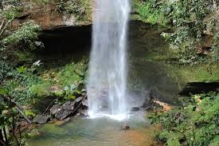
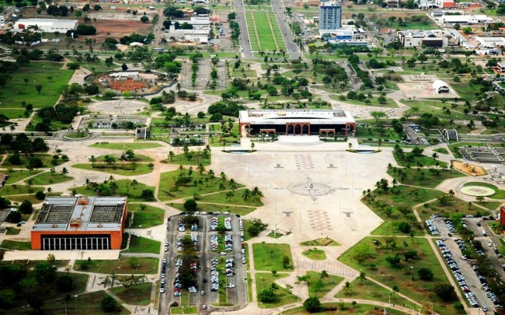
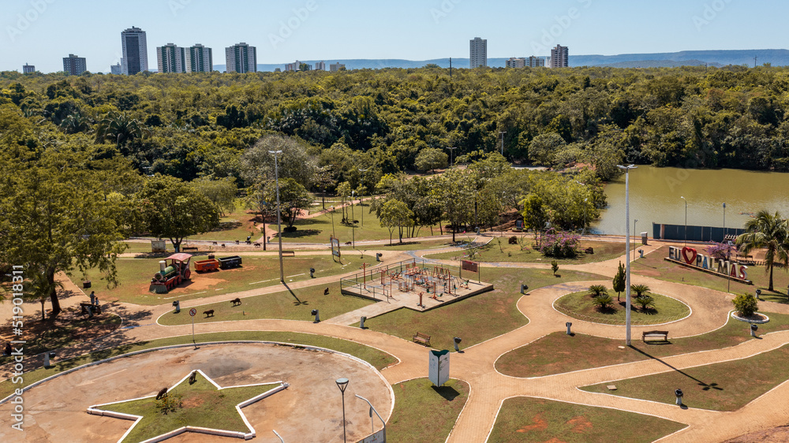
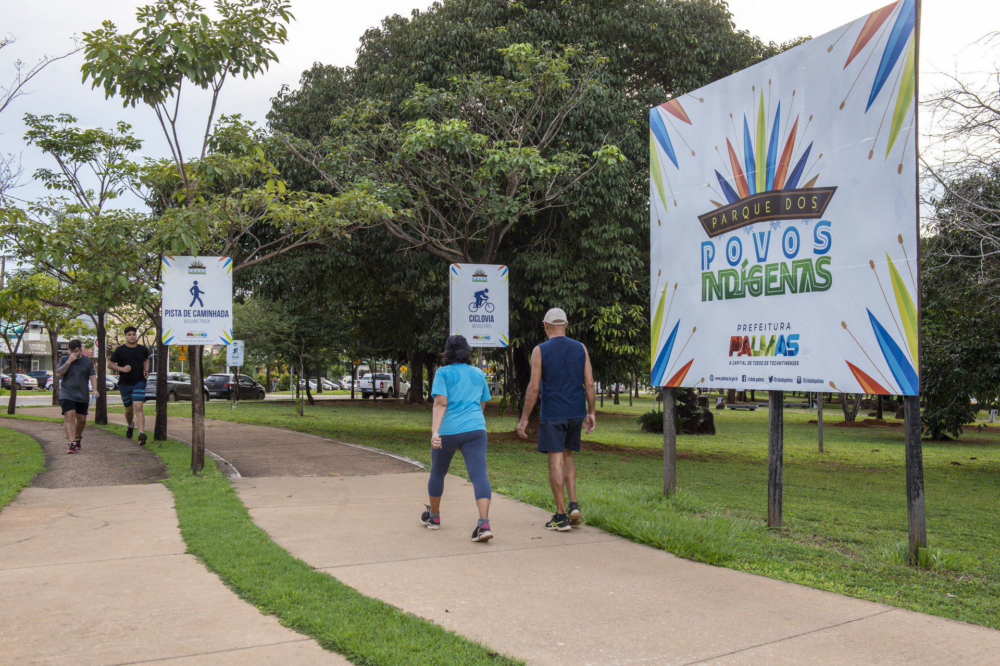
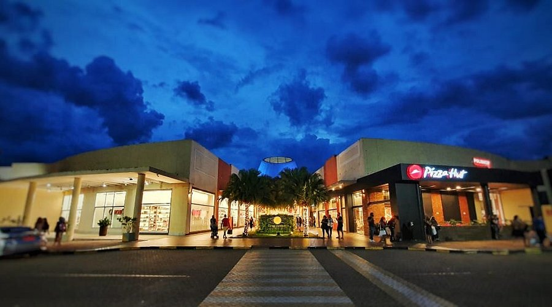

O que eu mais gosto em Palmas
Cachoeira do Taquaraçu

As águas da cachoeira são limpas e refrescantes, ideais para banho, especialmente nos dias quentes da região. O ambiente ao redor é tranquilo, com vegetação nativa e áreas sombreadas que tornam o local perfeito para descanso e lazer. Apesar de ter uma estrutura simples, o espaço costuma atender bem os visitantes.
Praça dos Girassóis

A Praça dos Girassóis é um dos principais pontos turísticos de Palmas e um dos maiores espaços públicos urbanos da América Latina. Ela abriga importantes prédios governamentais, como o Palácio Araguaia.
Parque Cesamar

O Parque Cesamar é um dos principais espaços de lazer da cidade, com grande área verde e um lago que deixa o ambiente ainda mais agradável. É muito frequentado por moradores e turistas.
Praia da grasiosa

Praia da Graciosa é um lugar que combina natureza, lazer e urbanização, sendo um dos melhores pontos para relaxar, praticar esportes e curtir o visual em Palmas.
Parque dos povos indigenas

A Praça dos Povos Indígenas é um espaço público importante da cidade de Palmas, voltado à valorização da cultura indígena e à convivência da população. Ela representa um ponto de encontro entre história, identidade cultural e lazer urbano.
Shopping Capim dourado

O Capim Dourado Shopping é o principal centro comercial de Palmas e um dos mais importantes do estado do Tocantins. Inaugurado em 2010, ele marcou uma nova fase no desenvolvimento da cidade, trazendo mais opções de lazer, compras e serviços para a população.